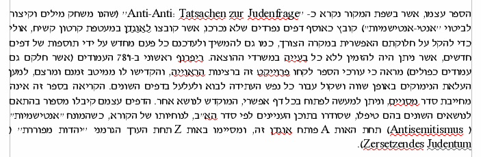

הדגמת יכולות Hspell ושימושים בו (המשך)
שילוב Hspell במקינטוש (מעבד תמלילים Mellel):

הצורך:
הפתרון:
עקרונות הפיתוח:
מציאת שגיאות כתיב ותיקוניהן המומלצים (מנשק טקסטואלי)
57 גרדנר ->
32 פונקצית -> פונקציית, פונקציות
25 קדקד -> קדקוד
לפי כללי הכתיב חסר הניקוד ("כתיב מלא") של האקדמיה ללשון העברית, תנועת "o"
שמקורה בחולם תיכתב בוי"ו. אולם זה לא המצב במקרה של קמץ קטן או חטף-קמץ - אז
תיכתב וי"ו רק אם במילה הבסיסית היה חולם.
לפיכך במילים שנכתבות בקמץ קטן או בחטף-קמץ בכל צורות המילה, אין להוסיף וי"ו.
לדוגמה: "תכנית", "קרבן", "חכמה", "אנייה", "נכרי", וכן "קדקוד".
יש לציין שלמרות שכלל זה נתקבל ע"י האקדמיה, הוא אינו מקובל על מקצת הבלשנים,
שמעדיפים היו לסמן וי"ו בכל מקום בו נהגית תנועה "o", כולל הקמץ הקטן וחטף הקמץ.
10 מימדית -> ממדית
7 כרצונינו -> כרצוננו
3 הפונציה ->
3 בוקטור -> בווקטור
2 המדידיות -> המדידות
2 השיוויון -> השוויון
מנשקי תכנות (APIs): C, ispell.
שולב ע"י מפתחים אחרים עם:
לדוגמה, גרסה עברית של OpenOffice באה עם Hspell:

שילוב Hspell במקינטוש (מעבד תמלילים Mellel):
מנתח צורני (מורפולוגי):
| כלבים | הרכבת | משטרה |
|---|---|---|
כלבים: כלב(ע,ז,רבים) |
הרכבת: הרכיב (פ,נ,2,יחיד,עבר) הרכיב (פ,ז,2,יחיד,עבר) הרכבה (ע,נ,יחיד,סמיכות) ה+רכבת: רכבת (ע,נ,יחיד) ה+רכבת: (ה"א השאלה) רכב (פ,נ,2,יחיד,עבר) רכב (פ,ז,2,יחיד,עבר) רכבת (ע,נ,יחיד,סמיכות) |
משטרה: משטרה (ע,נ,יחיד) משטר (ע,ז,יחיד,של/היא) מ+שטרה: שטר (ע,ז,יחיד,של/היא) |
הגישה שלנו - סינטטית (יוצרת): יצירת רשימות מילים:
| איסוף: | איסוף מילות בסיס | שלב קומפילציה: (perl) |
הטיה חצי-אוטומטית של מילים אלו (לא כולל תחיליות) |
| בדיקת איות: (C) |
בדיקת כל מילה ברשימת המילים החוקיות. מאפשר הוספת אותיות השימוש מש"ה וכל"ב בהתאם לסוג המילה. |
יתרונות/חסרונות יחסית לגזירה-לאחור:
| יתרונות: | אפשרות שילוב בבודקי איות מבוססי-רשימות קיימים הפרדה לשלבים פשוטים יותר ובלתי תלויים קוד יותר פשוט וקריא |
| חסרונות: | צריכת זיכרון (ללא affix compression) |
מספר דוגמאות:
מה יש ברשימת המילים?
| כלב כלב- כלבי כלבנו כלבך כלבך כלבכם כלבכן כלבו כלבה כלבן כלבם | כלבים כלבי- כלביי כלבינו כלביך כלבייך כלביכם כלביכן כלביו כלביה כלביהן כלביהם |
| ירוק ירוק- ירוקים ירוקי- | ירוקה ירוקת- ירוקות ירוקות- |
|
לשמור שמירה |
שמרתי שמרת שמרת שמר שמרה שמרנו שמרתם שמרתן שמרו |
שומר שומרת שומרים שומרות שמור שמורה שמורת- שמורים שמורי- שמורות |
אשמור תשמור תשמרי ישמור תשמור נשמור תשמרו תשמורנה ישמרו |
שמור שמרי שמרו שמורנה |
לשמרני וכו' שמרתיו וכו' |
| גרסה 0.7 כללה נטיות של: | ||
| 8,042 | שמות עצם | |
| 1,783 | תארים | |
| 5,113 | פעלים | |
| וכן | ||
| 1,880 | מילים נוספות | |
| ובסך הכול: | ||
| 406,629 | נטיות ומילים |
רשימת מילים זו על הדיסק מקום זניח: 130,038 bytes.
(כולל רשימת מילים ומידע על תחיליות חוקיות לכל מילה, ללא מנתח צורני מלא).
| כלב - כלבי | דגל - דגלי |
| כלב ע |
|
כלב
כלב-
כלבי
כלבנו
כלבך
כלבך
כלבכם
כלבכן
כלבו
כלבה
כלבן
כלבם
כלבים
כלבי- כלביי כלבינו כלביך כלבייך כלביכם כלביכן כלביו כלביה כלביהן כלביהם |
| קוף - קופים | עוף - עופות |
| שירות - שירותים | חירות - חירויות |
| עוף ע,ות | שירות ע,ים |
| עוף עוף- עופי עופנו עופך עופך עופכם עופכן עופו עופה עופן עופם עופות עופות- עופותיי עופותינו עופותיך עופותייך עופותיכם עופותיכן עופותיו עופותיה עופותיהן עופותיהם |
| משנה ע,יות | קצבה ע,אות | גרב ע,יים | עשן ע,יחיד | בת ע,רבים=בנות |
| חודש ע,ים,יים |
| שעה ע,ות,יים |
| קבר ע,ות,ים |
| איש ע,ים,רבים=אנשים |
| שפה ע,ות,יים,רבים=שפתות |
| יחיד | רבים |
| מלך | מלכים |
| מלכה | מלכות |
| כותרת | כותרות |
| כמות | כמויות |
| אחריות | -אין- |
| כותרת - כותרות | כותרת ע |
| מכונית - מכוניות | מכונית ע |
| חנית - חניתות | חנית ע,שמור_ת |
| כלבה, כלבת-, כלבתי, כלבות | כלבה ע |
| יונה, יונת-, יונתי, יונים | יונה ע,ים |
| רובה, רובה-, רובי, רובים | רובה ע,ים,סגול_ה |
| כלב - כלבים, כלבי |
| ספר - ספרים |
| מטוס - מטוסים |
| ספר - ספרי |
| עז - עזים |
| עיפרון, עפרוני, עפרונות | עיפרון ע,ות,אבד_י |
| מלך | מלכים | מלכי- | מלכיי/ינו/יך/ייך | מלכיכם/ן | מלכיו/ה | מלכיהם/ן |
| צומת | צמתים | צומתי- | צמתיי/ינו/יך/ייך | צומתיכם/ן | צמתיו/ה | צומתיהם/ן |
| צומת ע,ים,אבד_ו |
| אח, אחי-, אחיו | אח ע,מיוחד_אח | |
| שן, שיניים, שיניי | אח ע,מיוחד_שן | (יוצא-דופן של האקדמיה) |
| מגורים, מגורי-, מגוריי, ... | מגור ע,אין_יחיד |
| אחור, אחוריים, אחורי-, אחוריי, ... | אחור ע,אין_נטיות_יחיד,יים |
| סתיו, סתווי, סתווים, ... | סתו ע,נפרד=סתיו,נסמך=סתיו |
| גברת, גברות, גבירותיי, ... | גברת ע,רבים=גברות,נסמכים=גבירות |
| קריה ע | קרyה | קריה | קרyת- | קריית- | ||
| עירייה ע | עיריyה | עירייה | עיריyות | עיריות | ||
| קו ע | קw | קו | קwים | קווים | ||
| שוwק ע,אבד_ו | שוwק | שוק | שwקים | שווקים | שוwקיכם | שוקיכם |